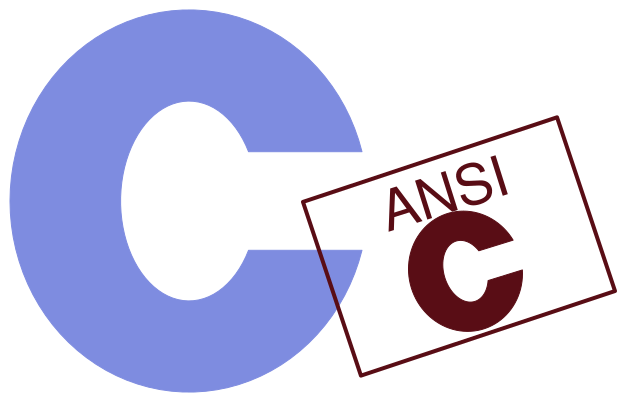

THE C PROGRAMMING LANGUAGE - SECOND EDITION

BRIANW KERNIGHAN DENNISM.RITCHIE
PAENTICE HALL SOFTWARE SERES
Content
| 编号 |
英文标题 |
中文标题 |
页码 |
| 0.1 |
Preface |
前言 |
6 |
| 0.2 |
Preface to the first edition |
第一版前言 |
8 |
| 编号 |
英文标题 |
中文标题 |
页码 |
| 1.1 |
Getting Started |
开始 |
9 |
| 1.2 |
Variables and Arithmetic Expressions |
变量与算术表达式 |
11 |
| 1.3 |
The for statement |
for 语句 |
16 |
| 1.4 |
Symbolic Constants |
符号常量 |
17 |
| 1.5 |
Character Input and Output |
字符输入与输出 |
18 |
| 1.5.1 |
File Copying |
文件复制 |
18 |
| 1.5.2 |
Character Counting |
字符计数 |
20 |
| 1.5.3 |
Line Counting |
行计数 |
21 |
| 1.5.4 |
Word Counting |
单词计数 |
22 |
| 1.6 |
Arrays |
数组 |
23 |
| 1.7 |
Functions |
函数 |
25 |
| 1.8 |
Arguments - Call by Value |
参数 - 传值调用 |
28 |
| 1.9 |
Character Arrays |
字符数组 |
29 |
| 1.10 |
External Variables and Scope |
外部变量与作用域 |
31 |
| 编号 |
英文标题 |
中文标题 |
页码 |
| 2.1 |
Variable Names |
变量名 |
35 |
| 2.2 |
Data Types and Sizes |
数据类型与长度 |
35 |
| 2.3 |
Constants |
常量 |
36 |
| 2.4 |
Declarations |
声明 |
39 |
| 2.5 |
Arithmetic Operators |
算术运算符 |
40 |
| 2.6 |
Relational and Logical Operators |
关系运算符与逻辑运算符 |
40 |
| 2.7 |
Type Conversions |
类型转换 |
41 |
| 2.8 |
Increment and Decrement Operators |
自增与自减运算符 |
44 |
| 2.9 |
Bitwise Operators |
位运算符 |
46 |
| 2.10 |
Assignment Operators and Expressions |
赋值运算符与表达式 |
47 |
| 2.11 |
Conditional Expressions |
条件表达式 |
49 |
| 2.12 |
Precedence and Order of Evaluation |
运算符优先级与求值次序 |
49 |
| 编号 |
英文标题 |
中文标题 |
页码 |
| 3.1 |
Statements and Blocks |
语句与块 |
52 |
| 3.2 |
If-Else |
if-else 语句 |
52 |
| 3.3 |
Else-If |
else-if 语句 |
53 |
| 3.4 |
Switch |
switch 语句 |
54 |
| 3.5 |
Loops - While and For |
循环 - while 与 for |
56 |
| 3.6 |
Loops - Do-While |
循环 - do-while |
58 |
| 3.7 |
Break and Continue |
break 与 continue 语句 |
59 |
| 3.8 |
Goto and labels |
goto 语句与标号 |
60 |
| 编号 |
英文标题 |
中文标题 |
页码 |
| 4.1 |
Basics of Functions |
函数基础 |
62 |
| 4.2 |
Functions Returning Non-integers |
返回非整型值的函数 |
65 |
| 4.3 |
External Variables |
外部变量 |
67 |
| 4.4 |
Scope Rules |
作用域规则 |
72 |
| 4.5 |
Header Files |
头文件 |
73 |
| 4.6 |
Static Variables |
静态变量 |
75 |
| 4.7 |
Register Variables |
寄存器变量 |
75 |
| 4.8 |
Block Structure |
块结构 |
76 |
| 4.9 |
Initialization |
初始化 |
76 |
| 4.10 |
Recursion |
递归 |
78 |
| 4.11 |
The C Preprocessor |
C 预处理器 |
79 |
| 4.11.1 |
File Inclusion |
文件包含 |
79 |
| 4.11.2 |
Macro Substitution |
宏替换 |
80 |
| 4.11.3 |
Conditional Inclusion |
条件包含 |
82 |
| 编号 |
英文标题 |
中文标题 |
页码 |
| 5.1 |
Pointers and Addresses |
指针与地址 |
83 |
| 5.2 |
Pointers and Function Arguments |
指针与函数参数 |
84 |
| 5.3 |
Pointers and Arrays |
指针与数组 |
87 |
| 5.4 |
Address Arithmetic |
地址算术运算 |
90 |
| 5.5 |
Character Pointers and Functions |
字符指针与函数 |
93 |
| 5.6 |
Pointer Arrays; Pointers to Pointers |
指针数组；指向指针的指针 |
96 |
| 5.7 |
Multi-dimensional Arrays |
多维数组 |
99 |
| 5.8 |
Initialization of Pointer Arrays |
指针数组的初始化 |
101 |
| 5.9 |
Pointers vs. Multi-dimensional Arrays |
指针与多维数组 |
101 |
| 5.10 |
Command-line Arguments |
命令行参数 |
102 |
| 5.11 |
Pointers to Functions |
指向函数的指针 |
106 |
| 5.12 |
Complicated Declarations |
复杂声明 |
108 |
| 编号 |
英文标题 |
中文标题 |
页码 |
| 6.1 |
Basics of Structures |
结构基础 |
114 |
| 6.2 |
Structures and Functions |
结构与函数 |
116 |
| 6.3 |
Arrays of Structures |
结构数组 |
118 |
| 6.4 |
Pointers to Structures |
指向结构的指针 |
122 |
| 6.5 |
Self-referential Structures |
自引用结构 |
124 |
| 6.6 |
Table Lookup |
表查找 |
127 |
| 6.7 |
Typedef |
类型定义 typedef |
129 |
| 6.8 |
Unions |
联合 |
131 |
| 6.9 |
Bit-fields |
位字段 |
132 |
| 编号 |
英文标题 |
中文标题 |
页码 |
| 7.1 |
Standard Input and Output |
标准输入与输出 |
135 |
| 7.2 |
Formatted Output - printf |
格式化输出 - printf |
137 |
| 7.3 |
Variable-length Argument Lists |
变长参数表 |
138 |
| 7.4 |
Formatted Input - Scanf |
格式化输入 - scanf |
140 |
| 7.5 |
File Access |
文件访问 |
142 |
| 7.6 |
Error Handling - Stderr and Exit |
错误处理 - stderr 与 exit |
145 |
| 7.7 |
Line Input and Output |
行输入与输出 |
146 |
| 7.8 |
Miscellaneous Functions |
其他函数 |
147 |
| 7.8.1 |
String Operations |
字符串操作 |
147 |
| 7.8.2 |
Character Class Testing and Conversion |
字符类别测试与转换 |
148 |
| 7.8.3 |
Ungetc |
ungetc 函数 |
148 |
| 7.8.4 |
Command Execution |
命令执行函数 |
148 |
| 7.8.5 |
Storage Management |
存储管理 |
148 |
| 7.8.6 |
Mathematical Functions |
数学函数 |
149 |
| 7.8.7 |
Random Number generation |
随机数生成 |
149 |
| 编号 |
英文标题 |
中文标题 |
页码 |
| 8.1 |
File Descriptors |
文件描述符 |
151 |
| 8.2 |
Low Level I/O - Read and Write |
低级 I/O - read 和 write |
152 |
| 8.3 |
Open, Creat, Close, Unlink |
open、creat、close 和 unlink |
153 |
| 8.4 |
Random Access - Lseek |
随机访问 - lseek |
155 |
| 8.5 |
Example - An implementation of Fopen and Getc |
示例 - fopen 和 getc 的实现 |
156 |
| 8.6 |
Example - Listing Directories |
示例 - 目录列表 |
159 |
| 8.7 |
Example - A Storage Allocator |
示例 - 存储分配程序 |
163 |
| 编号 |
英文标题 |
中文标题 |
页码 |
| A.1 |
Introduction |
引言 |
168 |
| A.2 |
Lexical Conventions |
词法约定 |
168 |
| A.2.1 |
Tokens |
记号 |
168 |
| A.2.2 |
Comments |
注释 |
168 |
| A.2.3 |
Identifiers |
标识符 |
168 |
| A.2.4 |
Keywords |
关键字 |
169 |
| A.2.5 |
Constants |
常量 |
169 |
| A.2.6 |
String Literals |
字符串字面值 |
171 |
| A.3 |
Syntax Notation |
语法表示法 |
171 |
| A.4 |
Meaning of Identifiers |
标识符的含义 |
171 |
| A.4.1 |
Storage Class |
存储类 |
171 |
| A.4.2 |
Basic Types |
基本类型 |
172 |
| A.4.3 |
Derived types |
派生类型 |
173 |
| A.4.4 |
Type Qualifiers |
类型限定符 |
173 |
| A.5 |
Objects and Lvalues |
对象与左值 |
173 |
| A.6 |
Conversions |
类型转换 |
173 |
| A.6.1 |
Integral Promotion |
整值提升 |
174 |
| A.6.2 |
Integral Conversions |
整值转换 |
174 |
| A.6.3 |
Integer and Floating |
整数与浮点数 |
174 |
| A.6.4 |
Floating Types |
浮点类型 |
174 |
| A.6.5 |
Arithmetic Conversions |
算术转换 |
174 |
| A.6.6 |
Pointers and Integers |
指针与整数 |
175 |
| A.6.7 |
Void |
void 类型 |
176 |
| A.6.8 |
Pointers to Void |
void 指针 |
176 |
| A.7 |
Expressions |
表达式 |
176 |
| A.7.1 |
Pointer Conversion |
指针转换 |
177 |
| A.7.2 |
Primary Expressions |
初等表达式 |
177 |
| A.7.3 |
Postfix Expressions |
后缀表达式 |
177 |
| A.7.4 |
Unary Operators |
一元运算符 |
179 |
| A.7.5 |
Casts |
强制类型转换 |
181 |
| A.7.6 |
Multiplicative Operators |
乘法类运算符 |
181 |
| A.7.7 |
Additive Operators |
加法类运算符 |
182 |
| A.7.8 |
Shift Operators |
移位运算符 |
182 |
| A.7.9 |
Relational Operators |
关系运算符 |
183 |
| A.7.10 |
Equality Operators |
相等类运算符 |
183 |
| A.7.11 |
Bitwise AND Operator |
按位与运算符 |
183 |
| A.7.12 |
Bitwise Exclusive OR Operator |
按位异或运算符 |
184 |
| A.7.13 |
Bitwise Inclusive OR Operator |
按位或运算符 |
184 |
| A.7.14 |
Logical AND Operator |
逻辑与运算符 |
184 |
| A.7.15 |
Logical OR Operator |
逻辑或运算符 |
184 |
| A.7.16 |
Conditional Operator |
条件运算符 |
184 |
| A.7.17 |
Assignment Expressions |
赋值表达式 |
185 |
| A.7.18 |
Comma Operator |
逗号运算符 |
185 |
| A.7.19 |
Constant Expressions |
常量表达式 |
186 |
| A.8 |
Declarations |
声明 |
186 |
| A.8.1 |
Storage Class Specifiers |
存储类说明符 |
187 |
| A.8.2 |
Type Specifiers |
类型说明符 |
188 |
| A.8.3 |
Structure and Union Declarations |
结构与联合声明 |
188 |
| A.8.4 |
Enumerations |
枚举 |
191 |
| A.8.5 |
Declarators |
声明符 |
192 |
| A.8.6 |
Meaning of Declarators |
声明符的含义 |
193 |
| A.8.7 |
Initialization |
初始化 |
196 |
| A.8.8 |
Type names |
类型名 |
198 |
| A.8.9 |
Typedef |
类型定义 typedef |
199 |
| A.8.10 |
Type Equivalence |
类型等价 |
199 |
| A.9 |
Statements |
语句 |
199 |
| A.9.1 |
Labeled Statements |
带标号的语句 |
200 |
| A.9.2 |
Expression Statement |
表达式语句 |
200 |
| A.9.3 |
Compound Statement |
复合语句 |
200 |
| A.9.4 |
Selection Statements |
选择语句 |
201 |
| A.9.5 |
Iteration Statements |
循环语句 |
201 |
| A.9.6 |
Jump statements |
跳转语句 |
202 |
| A.10 |
External Declarations |
外部声明 |
203 |
| A.10.1 |
Function Definitions |
函数定义 |
203 |
| A.10.2 |
External Declarations |
外部声明 |
204 |
| A.11 |
Scope and Linkage |
作用域与链接 |
205 |
| A.11.1 |
Lexical Scope |
词法作用域 |
205 |
| A.11.2 |
Linkage |
链接 |
206 |
| A.12 |
Preprocessing |
预处理 |
206 |
| A.12.1 |
Trigraph Sequences |
三字符序列 |
207 |
| A.12.2 |
Line Splicing |
行拼接 |
207 |
| A.12.3 |
Macro Definition and Expansion |
宏定义与宏扩展 |
207 |
| A.12.4 |
File Inclusion |
文件包含 |
209 |
| A.12.5 |
Conditional Compilation |
条件编译 |
210 |
| A.12.6 |
Line Control |
行控制 |
211 |
| A.12.7 |
Error Generation |
错误信息生成 |
211 |
| A.12.8 |
Pragmas |
pragma 指令 |
212 |
| A.12.9 |
Null directive |
空指令 |
212 |
| A.12.10 |
Predefined names |
预定义名字 |
212 |
| A.13 |
Grammar |
语法 |
212 |
| 编号 |
英文标题 |
中文标题 |
页码 |
| B.1 |
Input and Output: <stdio.h> |
输入与输出：<stdio.h> |
220 |
| B.1.1 |
File Operations |
文件操作 |
220 |
| B.1.2 |
Formatted Output |
格式化输出 |
222 |
| B.1.3 |
Formatted Input |
格式化输入 |
223 |
| B.1.4 |
Character Input and Output Functions |
字符输入与输出函数 |
225 |
| B.1.5 |
Direct Input and Output Functions |
直接输入与输出函数 |
225 |
| B.1.6 |
File Positioning Functions |
文件定位函数 |
226 |
| B.1.7 |
Error Functions |
错误处理函数 |
226 |
| B.2 |
Character Class Tests: <ctype.h> |
字符类别测试：<ctype.h> |
226 |
| B.3 |
String Functions: <string.h> |
字符串函数：<string.h> |
227 |
| B.4 |
Mathematical Functions: <math.h> |
数学函数：<math.h> |
228 |
| B.5 |
Utility Functions: <stdlib.h> |
实用函数：<stdlib.h> |
229 |
| B.6 |
Diagnostics: <assert.h> |
诊断：<assert.h> |
231 |
| B.7 |
Variable Argument Lists: <stdarg.h> |
变长参数表：<stdarg.h> |
231 |
| B.8 |
Non-local Jumps: <setjmp.h> |
非局部跳转：<setjmp.h> |
232 |
| B.9 |
Signals: <signal.h> |
信号：<signal.h> |
232 |
| B.10 |
Date and Time Functions: <time.h> |
日期与时间函数：<time.h> |
233 |
| B.11 |
Implementation-defined Limits: <limits.h> and <float.h> |
实现定义的限制：<limits.h> 与 <float.h> |
234 |